local Culture of Korea
Welcome to the local cultural resource platform that will make it easy and fun for you to learn about Korean culture and traditions.
We provide 'local stories' on various topics including local history and culture as well as 'Korean tourism elements' to revitalize local cultural resources and
materials that are being lost, and we are constantly discovering and digitizing the resources of 231 local cultural centers throughout Korea and providing
them on the website.
Local Culture Story
4 THEMES and 34 TOPICS
Local Culture Story
About 8,000 different Korean local cultural contents classified as topics that you might be interested in (life culture, historical cultural heritage, industry, overcoming the national crisis) are organized in interesting story formats, making it easy to understand the context of local and traditional cultures on sites of each theme.
Local Culture MAP
Full of Attractions
Local Culture MAP
You can meet various local cultural contents by region through the map.
Look directly at the map and find interesting local cultural contents and
local attractions and attractions in every corner of Korea!
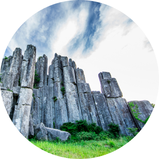
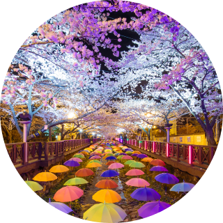
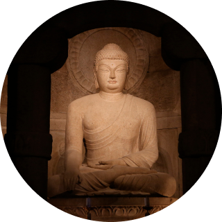
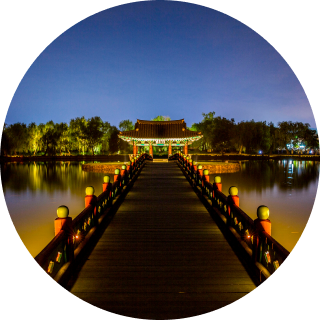
Culture Information
Look around Korea,
‘Cultural Information’
Are you looking for somewhere nice to visit in Korea? Do you need some information about various cultural events, festivals, or performances in Korea? Local N culture has it all! Come and get the information you want!
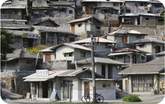
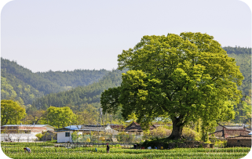
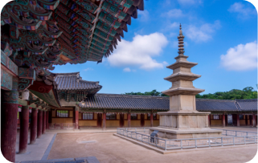
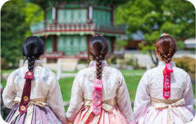
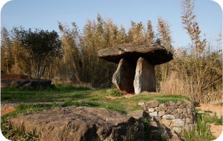
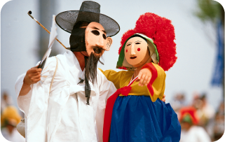
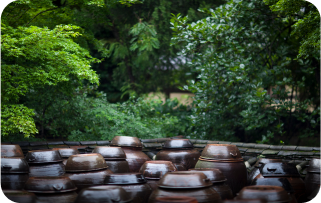
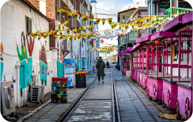
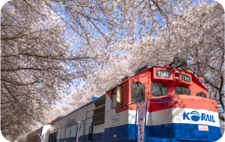
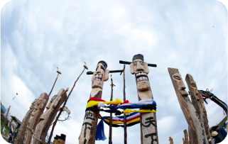

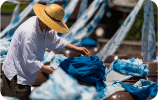
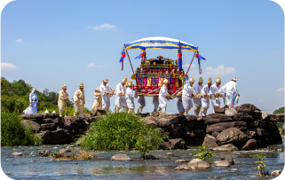
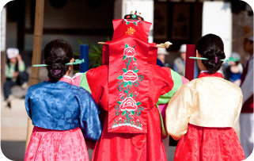
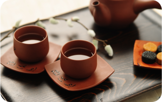
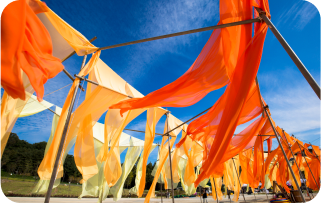
Local N culture
Easy on the mobile
Local N culture
For everyone who is interested in Korean local culture,
we have an application full of interesting contents about
Korean culture. Check out local N culture application and
enjoy various contents anytime, anywhere on mobile.
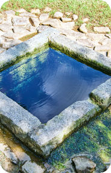
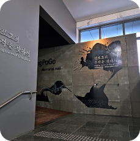
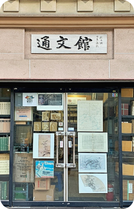
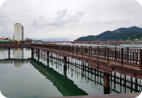
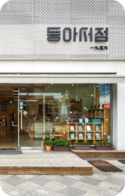
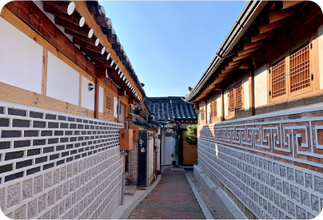
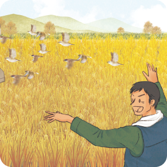
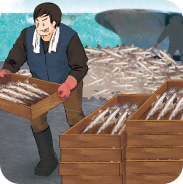
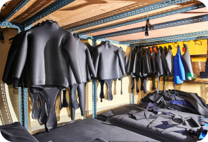
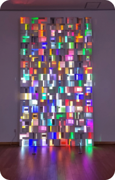
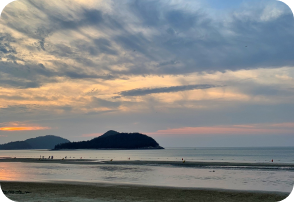
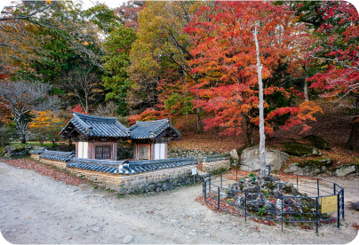
Inquiries about partnership
Contents usage and
Inquiries about partnership
Please download and fill out the form below and send it to us by e-mail.
Move to website
If you are curious about the local cultural contents of Korea
we prepared, click here!